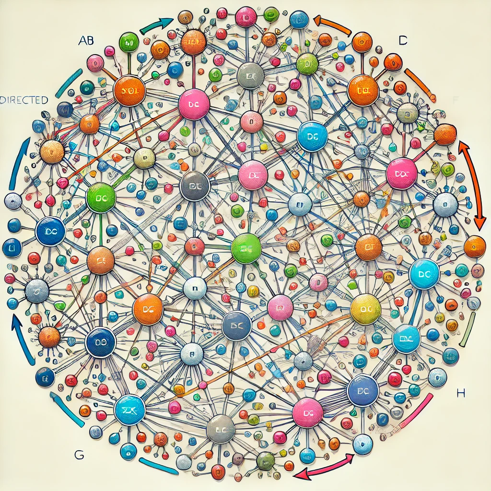
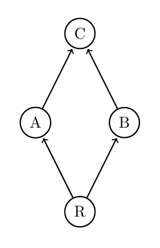
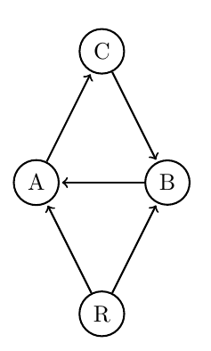

Introduction
Causal relationships help form the consensus reality that envelops us, from how information spreads in social networks to the chain reactions in scientific processes. Understanding these relationships can give us deep insights into the complex systems that shape our understanding of reality. Mapping out the web of cause and effect in an ecosystem or a technological network and understanding how to control these systems from a local to global perspective yields effective models for other isomorphic systems. There is power in deep understanding of causal networks.

So, what are causal networks? They’re mathematical structures used to represent and analyze cause-and-effect relationships. They consist of nodes (representing entities or events) and directed edges (showing causal influences). By examining these structures, we can understand how different components of a system interact, predict outcomes, and identify critical points representing situations for which small changes might have big outcomes.
Causal networks are crucial in various fields. In ecology, they help us understand food webs and energy flow between species. In sociology, they map out social influences and information spread. In computer science, they’re used in algorithms and machine learning models to predict future states based on current data. Essentially, wherever there are systems with interdependent components, causal networks offer valuable insights.
As discussed in a previous AI essay on the topological approach to food webs , understanding these networks from a topological perspective can reveal higher-dimensional insights into the complexity and stability of these systems. This approach captures not just pairwise interactions but also the intricate web of higher-order relationships that contribute to the robustness of ecological communities.
In this article, I’ll explore the basics of classical causal networks, highlighting their fundamental properties and how they represent causal relationships. We’ll also check out some simple examples to illustrate these concepts. By the end, we will develop understanding of classical causal networks and be ready to apply them to more advanced topics in future articles.
We’ll cover:
- The definition and components of a classical causal network
- Key properties like unique root and reachability
- Methods for analyzing these networks
- Examples to illustrate these concepts
This essay sets the stage for understanding higher-dimensional relationships and how they reveal deeper layers of information, eventually leading us toward the realm of quantum networks and the phenomenon of non-locality. Let's get entangled!
Understanding Classical Causal Networks
A classical causal network is a directed graph used to represent causal relationships. The nodes in the graph represent entities or events, and the directed edges represent causal influences from one node to another. This structure helps us understand how different components of a system interact, predict outcomes, and identify critical points that might need investigation.
Properties of Classical Causal Networks:
Unique Root: This property indicates the presence of a single source node from which all paths originate. The unique root is crucial for modeling causal relationships because it represents the primary source of influence in the network.
Reachability: This property ensures that every node in the network is reachable from the root. Reachability is important for ensuring the completeness of the causal network, allowing us to trace the influence of the root throughout the entire network.
Analysis of Causal Networks: Methods for analyzing causal networks include examining path lengths, dependencies, and feedback loops. These analyses help us understand the dynamics of the network and identify potential points of intervention. Later on, we will build from a classical causal netowrk a larger-dimensional space that links cause-and-effect through higher relationships, leading to entanglements of events.
Examples of Causal Networks:
Example 1: Simple Classical Causal Network
Consider a simple classical causal network \( G \) with vertices \(\{R, A, B, C\}\) and edges \(\{(R, A), (R, B), (A, C), (B, C)\}\).
- Vertices: \( R \) (root), \( A \), \( B \), \( C \)
- Edges: \( R \rightarrow A \), \( R \rightarrow B \), \( A \rightarrow C \), \( B \rightarrow C \)
This network can be analyzed for its causal properties and reachability. The root \( R \) influences all other nodes directly or indirectly, demonstrating the flow of influence in the network:

One can imagine this causal network describing the flow of information in a social media network, or the distribution of energy in a collectionof food chains, etc. The power of these networks is in their wide applicabillity.
Example 2: More Complex Causal Network
Consider a more complex causal network with vertices \(\{R, A, B, C\}\) and additional edges \(\{(B, A), (C, B)\}\), creating a cycle but without the edge \( B \rightarrow C \).
- Vertices: \( R \) (root), \( A \), \( B \), \( C \)
- Edges: \( R \rightarrow A \), \( R \rightarrow B \), \( A \rightarrow C \), \( C \rightarrow B \), \( B \rightarrow A \)
This network introduces additional complexity with cycles, which can be analyzed using more advanced techniques to quantify and qualify the differences between this network and the first, for example. The visual representation helps in understanding the flow and interaction within the network:

Once can certainly begin to imagine that these types of networks can get very complicated indeed.
Future Directions
Understanding the relationships between nodes in a causal system represented by a directed graph can reveal deeper insights. In future articles, we will explore how higher-dimensional relationships can uncover more complex interactions and structures within causal networks. This approach will present a synthesis of combinatorial, topological, and discrete differential-geometric techniques. In understanding classical causal networks, we set the stage for exploring quantum networks. Higher-dimensional structures can lead to phenomena such as non-locality in quantum networks, offering a richer understanding of these systems.